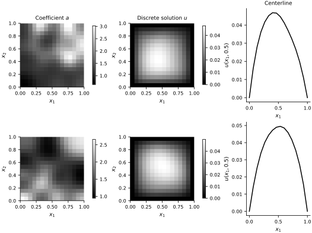
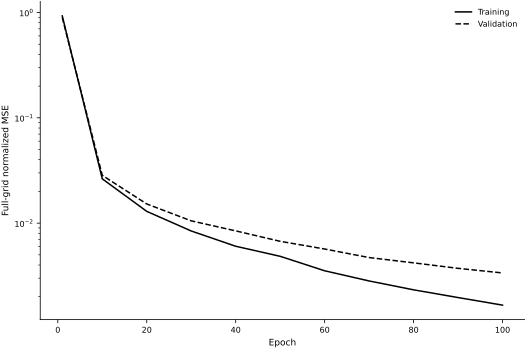
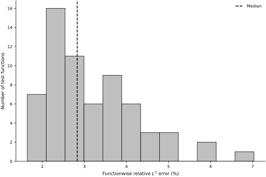
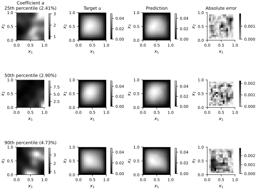
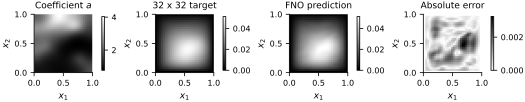

Fourier Neural Operator in JAX#
An FNO learns a map between fields by combining pointwise channel mixing with learned spectral convolutions. We apply it to a family of Darcy-flow problems and test two distinct claims: prediction for held-out coefficient fields on the training grid and zero-shot evaluation on a finer grid. The coefficient fields, numerical solutions, and figures are generated inside this notebook; no external dataset is used.
The architecture follows the FNO construction of Li et al. (2021) and the neural-operator formulation summarized by Kovachki et al. (2023). The experiment is an independent, deliberately small teaching example rather than a reproduction of the published Darcy benchmark.
Darcy solution operator#
Let \(D=(0,1)^2\), and let \(\mathcal{A}\) contain the continuous coefficient fields \(a:\overline D\to\mathbb{R}\) that have a positive lower bound. Let \(H_0^1(D)\) denote the Sobolev space of square-integrable functions with square-integrable weak first derivatives and zero boundary trace. For \(a\in\mathcal{A}\), we consider the weak solution \(u\in H_0^1(D)\) of
The reference solution operator maps the coefficient field to the corresponding solution field,
The notebook observes both fields on a uniform grid. A numerical PDE solver supplies a discrete target \(\mathcal{G}^{\dagger}_h\), and the FNO learns a grid-to-grid approximation \(\mathcal{G}_{\theta,h}\). The numerical experiment therefore concerns discrete solution maps; it does not by itself establish convergence to the continuum operator \(\mathcal{G}^{\dagger}\).
Spectral convolution#
The input at each grid point contains the normalized coefficient and the two spatial coordinates. A pointwise affine map \(P_\theta\) lifts these three quantities to the initial feature field
At layer \(\ell\), the feature vector \(v_\ell(x)\in\mathbb{R}^{c_\ell}\) has \(c_\ell\) channels. The layer has the form
where \(W_{\ell}:\mathbb{R}^{c_\ell}\to\mathbb{R}^{c_{\ell+1}}\) mixes channels pointwise, \(b_\ell\) is its bias, \(\sigma\) is the Gaussian error linear unit activation, and \(\mathcal{F}_h\) is the discrete Fourier transform on the grid. For each frequency \(k\) in the retained set \(K_h\), the learned complex matrix \(R_{\ell,\theta}(k)\in\mathbb{C}^{c_{\ell+1}\times c_\ell}\) mixes the transformed channels. We retain five modes in each transformed coordinate and set the remaining Fourier coefficients to zero. A final pointwise map \(Q_\theta\) projects \(v_L\) to a scalar field.
The retained spectral modes couple all grid locations. For \(n\) grid points and a fixed channel count, the transform contribution scales as \(O(n\log n)\), in addition to the retained-mode and pointwise channel-mixing costs. The spectral weights do not depend on the number of grid points, so the same learned parameters can be evaluated on another compatible uniform grid. That architectural compatibility is not an accuracy guarantee; the fine-grid experiment below measures it directly.
The implemented output is
where \(P_ha\) denotes the coefficient values on the grid. The polynomial factor makes every prediction satisfy the zero Dirichlet boundary condition.
Data splits and discretization#
We draw independent coefficient realizations for 256 training, 64 validation, and 64 test problems. The training grid has \(16\times16\) points, including the boundary. Training statistics normalize the inputs and scale the outputs without shifting them, so a zero normalized prediction still represents the zero boundary value. The validation functions select the training checkpoint; the test functions remain untouched until final evaluation.
n_train, n_validation, n_test = 256, 64, 64
n_total = n_train + n_validation + n_test
random_coefficients = rng.standard_normal((n_total, 6, 6))
random_coefficients[:, 0, 0] = 0.0
data_start = time.perf_counter()
coefficients_16 = generate_coefficients(random_coefficients, resolution=16)
solutions_16 = solve_darcy_batch(coefficients_16)
data_time = time.perf_counter() - data_start
train_slice = slice(0, n_train)
validation_slice = slice(n_train, n_train + n_validation)
test_slice = slice(n_train + n_validation, n_total)
input_mean = coefficients_16[train_slice].mean()
input_standard_deviation = coefficients_16[train_slice].std()
output_scale = solutions_16[train_slice].std()
def normalize_input(values):
return ((values - input_mean) / input_standard_deviation).astype(np.float32)
def normalize_output(values):
return (values / output_scale).astype(np.float32)
x_train = normalize_input(coefficients_16[train_slice])
x_validation = normalize_input(coefficients_16[validation_slice])
x_test = normalize_input(coefficients_16[test_slice])
y_train = normalize_output(solutions_16[train_slice])
y_validation = normalize_output(solutions_16[validation_slice])
y_test = normalize_output(solutions_16[test_slice])
print(f"Training/validation/test functions: {n_train}/{n_validation}/{n_test}")
print(f"Grid: {coefficients_16.shape[-1]} x {coefficients_16.shape[-1]}")
print(f"Generated {n_total} PDE solutions in {data_time:.2f} seconds")
Training/validation/test functions: 256/64/64
Grid: 16 x 16
Generated 384 PDE solutions in 0.36 seconds
fig, axes = new_figure(size="full_tall", nrows=2, ncols=3)
spatial_grid = np.linspace(0.0, 1.0, 16)
for row, sample_index in enumerate([0, 1]):
coefficient_image = axes[row, 0].imshow(
coefficients_16[sample_index], origin="lower", cmap="gray", extent=(0, 1, 0, 1)
)
fig.colorbar(coefficient_image, ax=axes[row, 0], fraction=0.046)
solution_image = axes[row, 1].imshow(
solutions_16[sample_index], origin="lower", cmap="gray", extent=(0, 1, 0, 1)
)
fig.colorbar(solution_image, ax=axes[row, 1], fraction=0.046)
centerline = 0.5 * (
solutions_16[sample_index, 16 // 2 - 1]
+ solutions_16[sample_index, 16 // 2]
)
axes[row, 2].plot(
spatial_grid,
centerline,
color="black",
)
axes[row, 2].set_xlabel("$x_1$")
axes[row, 2].set_ylabel("$u(x_1, 0.5)$")
for axis in axes[:, :2].ravel():
axis.set_xlabel("$x_1$")
axis.set_ylabel("$x_2$")
axes[0, 0].set_title("Coefficient $a$")
axes[0, 1].set_title("Discrete solution $u$")
axes[0, 2].set_title("Centerline")
plt.show()

JAX implementation#
The implementation below uses four spectral layers, twelve feature channels, and five retained modes per coordinate. Each spectral layer stores separate real parameters for the real and imaginary parts of the positive- and negative-frequency multipliers. This real parameterization lets the optimizer update a standard real-valued parameter tree while the Fourier calculation remains complex-valued.
def make_coordinates(resolution):
axis = jnp.linspace(0.0, 1.0, resolution)
coordinate_2, coordinate_1 = jnp.meshgrid(axis, axis, indexing="ij")
return jnp.stack((coordinate_1, coordinate_2))
def initialize_linear(key, output_channels, input_channels):
scale = np.sqrt(2.0 / input_channels)
return {
"weight": scale * jax.random.normal(
key, (output_channels, input_channels)
),
"bias": jnp.zeros((output_channels,)),
}
def initialize_spectral(key, channels, modes):
keys = jax.random.split(key, 4)
shape = (channels, channels, modes, modes)
scale = 1.0 / np.sqrt(channels**2)
return {
"positive_real": scale * jax.random.normal(keys[0], shape),
"positive_imag": scale * jax.random.normal(keys[1], shape),
"negative_real": scale * jax.random.normal(keys[2], shape),
"negative_imag": scale * jax.random.normal(keys[3], shape),
}
def initialize_fno(key, width=12, depth=4, modes=5):
keys = iter(jax.random.split(key, 3 + 2 * depth))
parameters = {
"lift": initialize_linear(next(keys), width, 3),
"blocks": [],
"project_hidden": initialize_linear(next(keys), width, width),
"project_output": initialize_linear(next(keys), 1, width),
}
for _ in range(depth):
parameters["blocks"].append(
{
"spectral": initialize_spectral(next(keys), width, modes),
"local": initialize_linear(next(keys), width, width),
}
)
return parameters
def linear_map(parameters, features):
return (
jnp.einsum("oi,bihw->bohw", parameters["weight"], features)
+ parameters["bias"][None, :, None, None]
)
def spectral_convolution(parameters, features):
transform = jnp.fft.rfft2(features, axes=(-2, -1))
batch_size, _, height, reduced_width = transform.shape
modes_1 = parameters["positive_real"].shape[-2]
modes_2 = parameters["positive_real"].shape[-1]
positive_weights = (
parameters["positive_real"] + 1j * parameters["positive_imag"]
)
negative_weights = (
parameters["negative_real"] + 1j * parameters["negative_imag"]
)
output_transform = jnp.zeros(
(batch_size, positive_weights.shape[0], height, reduced_width),
dtype=transform.dtype,
)
positive_values = jnp.einsum(
"bimn,oimn->bomn",
transform[:, :, :modes_1, :modes_2],
positive_weights,
)
negative_values = jnp.einsum(
"bimn,oimn->bomn",
transform[:, :, -modes_1:, :modes_2],
negative_weights,
)
output_transform = output_transform.at[
:, :, :modes_1, :modes_2
].set(positive_values)
output_transform = output_transform.at[
:, :, -modes_1:, :modes_2
].set(negative_values)
return jnp.fft.irfft2(
output_transform,
s=(height, features.shape[-1]),
axes=(-2, -1),
)
def predict_fno(parameters, normalized_coefficients, coordinates):
batch_size = normalized_coefficients.shape[0]
coordinate_batch = jnp.broadcast_to(
coordinates[None, ...], (batch_size,) + coordinates.shape
)
features = jnp.concatenate(
(normalized_coefficients[:, None, ...], coordinate_batch), axis=1
)
features = linear_map(parameters["lift"], features)
for block in parameters["blocks"]:
nonlocal_features = spectral_convolution(block["spectral"], features)
local_features = linear_map(block["local"], features)
features = jax.nn.gelu(nonlocal_features + local_features)
features = jax.nn.gelu(
linear_map(parameters["project_hidden"], features)
)
output = linear_map(parameters["project_output"], features)[:, 0]
boundary_factor = (
16.0
* coordinates[0]
* (1.0 - coordinates[0])
* coordinates[1]
* (1.0 - coordinates[1])
)
return output * boundary_factor[None, ...]
def normalized_mse(parameters, inputs, targets, coordinates):
residual = predict_fno(parameters, inputs, coordinates) - targets
return jnp.mean(residual**2)
Training and validation#
We minimize mean squared error on normalized solution fields with AdamW. Every ten epochs we recompute full-grid training and validation errors using the updated parameters. The checkpoint with the smallest validation error is retained. The reported training time includes JAX compilation and is therefore a machine-specific reproducibility diagnostic, not a portable performance benchmark.
coordinates_16 = make_coordinates(16)
parameters = initialize_fno(jax.random.key(SEED), width=12, depth=4, modes=5)
parameter_count = sum(leaf.size for leaf in jax.tree.leaves(parameters))
optimizer = optax.adamw(learning_rate=2e-3, weight_decay=1e-5)
optimizer_state = optimizer.init(parameters)
@jax.jit
def update(parameters, optimizer_state, inputs, targets):
loss, gradients = jax.value_and_grad(normalized_mse)(
parameters, inputs, targets, coordinates_16
)
updates, optimizer_state = optimizer.update(
gradients, optimizer_state, parameters
)
parameters = optax.apply_updates(parameters, updates)
return parameters, optimizer_state, loss
@jax.jit
def full_grid_loss(parameters, inputs, targets):
return normalized_mse(parameters, inputs, targets, coordinates_16)
batch_size = 32
num_epochs = 100
best_validation_mse = np.inf
best_parameters = parameters
best_epoch = 0
history = {"epoch": [], "train_mse": [], "validation_mse": []}
training_start = time.perf_counter()
for epoch in range(1, num_epochs + 1):
permutation = rng.permutation(n_train)
for start_index in range(0, n_train, batch_size):
indices = permutation[start_index : start_index + batch_size]
parameters, optimizer_state, _ = update(
parameters,
optimizer_state,
jnp.asarray(x_train[indices]),
jnp.asarray(y_train[indices]),
)
if epoch == 1 or epoch % 10 == 0:
train_mse = float(
full_grid_loss(parameters, jnp.asarray(x_train), jnp.asarray(y_train))
)
validation_mse = float(
full_grid_loss(
parameters,
jnp.asarray(x_validation),
jnp.asarray(y_validation),
)
)
history["epoch"].append(epoch)
history["train_mse"].append(train_mse)
history["validation_mse"].append(validation_mse)
if validation_mse < best_validation_mse:
best_validation_mse = validation_mse
best_parameters = jax.tree.map(lambda value: value.copy(), parameters)
best_epoch = epoch
training_time = time.perf_counter() - training_start
parameters = best_parameters
print(f"Trainable real parameters: {parameter_count:,}")
print(f"Selected epoch: {best_epoch}")
print(f"Best validation MSE: {best_validation_mse:.4e}")
print(f"Training time including compilation: {training_time:.2f} seconds on {jax.default_backend()}")
Trainable real parameters: 58,441
Selected epoch: 100
Best validation MSE: 3.3635e-03
Training time including compilation: 4.58 seconds on cpu
fig, axis = new_figure(size="full_standard")
axis.semilogy(
history["epoch"], history["train_mse"], color="black", linestyle="-", label="Training"
)
axis.semilogy(
history["epoch"],
history["validation_mse"],
color="black",
linestyle="--",
label="Validation",
)
axis.set_xlabel("Epoch")
axis.set_ylabel("Full-grid normalized MSE")
axis.legend()
finalize_axes(axis)
plt.show()

Held-out evaluation#
For each test function, we report the quadrature-weighted relative error
where \(w_j\) are tensor-product trapezoidal weights on the grid. The aggregate error forms the same ratio after summing both numerator and denominator over all test functions. We report the full error distribution and percentile cases instead of selecting favorable examples.
def trapezoidal_weights(resolution):
weights_1d = np.ones(resolution)
weights_1d[[0, -1]] = 0.5
return np.outer(weights_1d, weights_1d)
def functionwise_relative_errors(predictions, targets):
weights = trapezoidal_weights(predictions.shape[-1])
squared_residual = np.sum(
weights[None, ...] * (predictions - targets) ** 2, axis=(1, 2)
)
squared_target = np.sum(
weights[None, ...] * targets**2, axis=(1, 2)
)
return np.sqrt(squared_residual / np.maximum(squared_target, 1e-12))
def aggregate_relative_error(predictions, targets):
weights = trapezoidal_weights(predictions.shape[-1])
squared_residual = np.sum(weights[None, ...] * (predictions - targets) ** 2)
squared_target = np.sum(weights[None, ...] * targets**2)
return np.sqrt(squared_residual / max(squared_target, 1e-12))
predictions_16 = (
np.asarray(predict_fno(parameters, jnp.asarray(x_test), coordinates_16))
* output_scale
)
targets_16 = solutions_16[test_slice]
errors_16 = functionwise_relative_errors(predictions_16, targets_16)
aggregate_error_16 = aggregate_relative_error(predictions_16, targets_16)
print(f"Aggregate relative L2 error: {100 * aggregate_error_16:.2f}%")
print(f"Mean functionwise relative L2 error: {100 * errors_16.mean():.2f}%")
print(f"Median functionwise relative L2 error: {100 * np.median(errors_16):.2f}%")
print(f"90th percentile: {100 * np.percentile(errors_16, 90):.2f}%")
fig, axis = new_figure(size="full_standard")
axis.hist(100 * errors_16, bins=12, color="0.75", edgecolor="black")
axis.axvline(100 * np.median(errors_16), color="black", linestyle="--", label="Median")
axis.set_xlabel("Functionwise relative $L^2$ error (%)")
axis.set_ylabel("Number of test functions")
axis.legend()
finalize_axes(axis)
plt.show()
Aggregate relative L2 error: 3.38%
Mean functionwise relative L2 error: 3.19%
Median functionwise relative L2 error: 2.83%
90th percentile: 4.65%

percentile_levels = np.array([25.0, 50.0, 90.0])
percentile_values = np.percentile(errors_16, percentile_levels)
case_indices = [
int(np.argmin(np.abs(errors_16 - value))) for value in percentile_values
]
fig, axes = plt.subplots(
3, 4, figsize=(7.35, 5.8), constrained_layout=True
)
for row, (level, sample_index) in enumerate(zip(percentile_levels, case_indices)):
target = targets_16[sample_index]
prediction = predictions_16[sample_index]
value_minimum = min(target.min(), prediction.min())
value_maximum = max(target.max(), prediction.max())
panels = (
(coefficients_16[test_slice][sample_index], "Coefficient $a$", None, None),
(target, "Target $u$", value_minimum, value_maximum),
(prediction, "Prediction", value_minimum, value_maximum),
(np.abs(prediction - target), "Absolute error", None, None),
)
for column, (field, title, lower, upper) in enumerate(panels):
image = axes[row, column].imshow(
field,
origin="lower",
cmap="gray" if column < 3 else "gray_r",
extent=(0, 1, 0, 1),
vmin=lower,
vmax=upper,
)
fig.colorbar(image, ax=axes[row, column], fraction=0.046)
axes[row, column].set_xlabel("$x_1$")
axes[row, column].set_ylabel("$x_2$")
if row == 0:
axes[row, column].set_title(title)
row_label = (
f"{level:.0f}th percentile "
f"({100 * errors_16[sample_index]:.2f}%)"
)
if row == 0:
axes[row, 0].set_title(f"Coefficient $a$\n{row_label}")
else:
axes[row, 0].set_title(row_label)
plt.show()

Resolution transfer#
The spectral multipliers and pointwise channel maps can act on any grid that resolves the five retained modes. To test that compatibility, we take the first 32 held-out random coefficient expansions, evaluate them on a \(32\times32\) grid, and solve the Darcy equation again on that grid. The trained parameters and the normalization constants remain fixed. This is a zero-shot resolution-transfer test within the same domain, coefficient distribution, forcing, and boundary conditions.
n_transfer = 32
transfer_random_coefficients = random_coefficients[test_slice][:n_transfer]
coefficients_32 = generate_coefficients(
transfer_random_coefficients, resolution=32
)
solutions_32 = solve_darcy_batch(coefficients_32)
x_transfer_32 = normalize_input(coefficients_32)
coordinates_32 = make_coordinates(32)
predictions_32 = (
np.asarray(
predict_fno(parameters, jnp.asarray(x_transfer_32), coordinates_32)
)
* output_scale
)
errors_32 = functionwise_relative_errors(predictions_32, solutions_32)
paired_errors_16 = errors_16[:n_transfer]
print(f"Paired mean error on 16 x 16 grid: {100 * paired_errors_16.mean():.2f}%")
print(f"Paired mean error on 32 x 32 grid: {100 * errors_32.mean():.2f}%")
print(f"32 x 32 median error: {100 * np.median(errors_32):.2f}%")
print(f"32 x 32 90th percentile: {100 * np.percentile(errors_32, 90):.2f}%")
sample_index = int(np.argsort(errors_32)[len(errors_32) // 2])
target = solutions_32[sample_index]
prediction = predictions_32[sample_index]
value_minimum = min(target.min(), prediction.min())
value_maximum = max(target.max(), prediction.max())
fig, axes = new_figure(size="full_landscape", nrows=1, ncols=4)
panels = (
(coefficients_32[sample_index], "Coefficient $a$", None, None, "gray"),
(target, "32 x 32 target", value_minimum, value_maximum, "gray"),
(prediction, "FNO prediction", value_minimum, value_maximum, "gray"),
(np.abs(prediction - target), "Absolute error", None, None, "gray_r"),
)
for axis, (field, title, lower, upper, color_map) in zip(axes, panels):
image = axis.imshow(
field,
origin="lower",
cmap=color_map,
extent=(0, 1, 0, 1),
vmin=lower,
vmax=upper,
)
fig.colorbar(image, ax=axis, fraction=0.046)
axis.set_title(title)
axis.set_xlabel("$x_1$")
axis.set_ylabel("$x_2$")
plt.show()
Paired mean error on 16 x 16 grid: 3.42%
Paired mean error on 32 x 32 grid: 3.86%
32 x 32 median error: 3.75%
32 x 32 90th percentile: 5.59%

Results and limitations#
The recorded run uses 58,441 trainable real parameters. On the 64 untouched \(16\times16\) test functions, the aggregate relative \(L^2\) error is \(3.38\%\), the mean functionwise error is \(3.19\%\), the median is \(2.83\%\), and the \(90\)th percentile is \(4.65\%\). For the paired 32-function resolution test, the mean error changes from \(3.42\%\) on the training resolution to \(3.86\%\) on the \(32\times32\) grid.
These results support two narrow claims: the model predicts held-out coefficients from the stated input law on the training grid, and the same learned parameters retain useful accuracy on one finer grid. The experiment does not test a new coefficient distribution, forcing, boundary condition, geometry, or frequency content. The \(32\times32\) targets also remain numerical approximations, so the transfer result is not evidence of continuum convergence. The output factor enforces the zero Dirichlet values, but the spectral blocks still use a periodic discrete transform of their hidden fields; this notebook does not compare padding or other boundary treatments. The boundary factor must also be changed for other boundary conditions.
Exercises#
Use the validation error to compare 50, 100, and 200 training epochs. Select the epoch budget before examining a fresh test set.
Change the retained modes from five to three and seven while keeping the width fixed. Compare parameter counts, validation error, and test error.
Change the width from 12 to 8 and 16 while keeping the retained modes fixed. Explain how width and spectral truncation control different parts of the model.
Remove the boundary factor from the output. Measure the boundary error separately from the interior error and explain the role of the encoded boundary condition.
Train on the \(16\times16\) grid and evaluate on \(24\times24\), \(32\times32\), and \(48\times48\) grids generated from the same held-out cosine coefficients. Distinguish resolution transfer from convergence to the continuum solution.
Test coefficient fields with a slower spectral decay or modes above five. Treat this as out-of-distribution evaluation and relate the result to the retained Fourier modes.